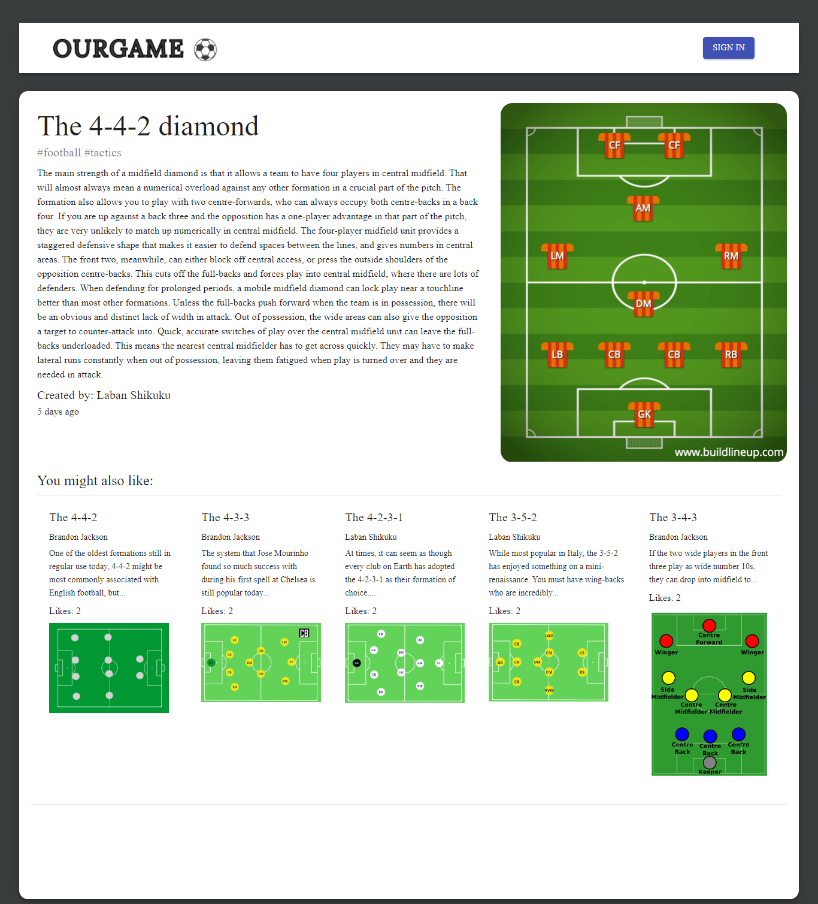

This is a fully responsive online social media website with similar
features to popular social media and blog websites available on the internet.
1. Key Features
A list of some of the functions you can perform in the app are:
- - CRUD Functionality: Users can seamlessly create, read, update, and delete football-related posts. Share
your thoughts, insights, and favorite moments with the community.
- - Liking and Commenting: Express your appreciation for posts by liking them, and engage in conversations
through comments. The platform encourages a vibrant exchange of ideas and opinions.
- - User Authentication and Authorization: Securely sign up, log in, and enjoy a personalized experience.
Different user roles ensure that the platform remains interactive, yet controlled, fostering a positive and
respectful community.
- - Search Functionality: Easily find specific posts using the search feature. Whether you're looking for
discussions on a particular team, player, or topic, FootballConnect ensures you can quickly locate relevant
content.
- - Responsive Design:FootballConnect is designed to provide a consistent and enjoyable experience across
various devices. From desktops to smartphones, the responsive design ensures accessibility for all users.
2. Tech Stack
-
- MongoDB to store the database schemas.
-
- Express framework and NodeJs was utilized to create the back-end
functionalities
-
- JWT was used to ensure secure authorization and authentication.
-
- REACT was used as the front-end framework with Material Ui as the main
design component
3. Deployment
-
The application is currently live and accessible at .
-
Alternatively, you can explore the codebase on .
